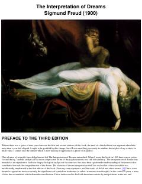

TIZigmund Freydning tushlarni ongsizlik va psixoanaliz nuqtai nazaridan tahlil qiluvchi mashhur ilmiy asari.
Ushbu asar tushlarni ilmiy tahlil qilish va psixoanaliz asoschisi Zigmund Freydning tushlar orqali inson ongsizligini o'rganish nazariyasiga bag'ishlangan. Kitobda tushlarning kelib chiqishi, ularning ramziy ma'nolari va psixonevrozlar bilan bog'liqligi batafsil yoritilgan.